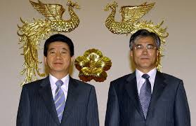

- 약력
- 일생
- 평가
일생

2001년 12월, 16대 대선 출마를 선언하고 경선 레이스에 참여했다. 하지만 이때 노무현은 행정능력이 검증된 정치인은 아니었고 당내의 다른 대권주자에 비해 인지도가 낮아 지지율은 미미했다. 그러나 노무현은 민주당 내 '영남후보론'과, 가장 강력한 후보였던 이인제의 당적 정체성을 공격하면서 이른바 노풍을 불러일으키면서 역전승에 성공, 경선을 통과하면서 새천년민주당의 대선후보로 선출되었다. 당시 새천년민주당의 경선과정에 대해서는 제16대 대통령 선거 문서에서 다룬다.
이때 처음으로 유시민을 비롯해 훗날 노무현 정부와 문재인 정부에서 비서관, 실장으로 근무하게 되는 많은 사람들이 모인다. 당 대선후보가 되었을 당시 노무현은 지역주의를 타파하고 새 시대가 찾아올 것 같기는 한데, 그 때가 되면 자신은 없을 것 같다 말했다고 한다. 그걸 들은 유시민은 새 시대의 첫 파도에 올라탄 거라서 자신이 거기까지 못 갈 수도 있지만 그 시대는 분명 온다 말했고, 노무현은 "새 시대가 오기만 한다면 내가 없어도 어때"라고 말했다. 당시에는 노무현 본인도 그렇게 인생을 마무리할 줄은 전혀 몰랐겠지만, 시대가 지나고 난 뒤에 보면 굉장히 섬뜩하게 들릴 지경.
본선에서는 한나라당의 이회창 후보와 맞붙게 되었다. 노무현 측은 낡은 정치 청산, 새로운 대한민국 건설, 행정수도의 충청권 이전 등을 공약으로 내세웠고, 이회창 측은 부패 정권 심판, 정권교체 등의 공약을 내세워 치열한 접전 양상을 보였다. 하지만 이회창 후보는 지난 대선에서도 제기되었던 아들 정연 씨의 병역비리 의혹이라는 치명적인 약점을 지니고 있었다.
이것이 재차 인터넷에 퍼져나가자, 그에 대한 여론이 급속도로 나빠지기 시작했다. 이회창은 이에 대해 대국민 사과를 하였다. 후에 이정연 씨의 병역비리 의혹은 의혹에 불과했음이 밝혀졌기 때문에 결국은 정치공세에 불과했던 셈.[12]
초반 기선은 노무현이 압서는 듯했지만 2002년 월드컵을 앞두고 나서 선거악재가 터진 데다가 2002년 한일월드컵에 관심이 쏠리면서 투표율이 낮게 나왔고 결국 지방선거에서 민주당이 참패하며 노무현이 큰 타격을 입고 이회창이 앞서는 결과가 나왔다. 하지만 이회창의 지지율이 높아졌다고 해도 당시 제3 후보로 떠오르던 정몽준과 노무현을 완전히 압도할 기세는 아니었고, 이미 1987년 대선의 선례도 있었기 때문에 노무현 후보는 당시 2002 한일 월드컵으로 인기가 올라간 정몽준 후보와 단일화를 하기로 했고, 여론조사 결과에 따라 단일 후보로 추대되었다. 단일화 진행 후에는 이회창 후보를 여유있게 앞섰지만 대선 전날 정몽준 후보가 노무현 후보에 대한 지지를 철회했다. 그래서, 노무현 후보가 직접 정몽준의 집으로 찾아갔으나 문전박대를 당하는 모습이 공개되면서 분노한 사람들이 적극적으로 지지층을 투표장으로 불러모으는 효과를 낳았다는 분석이 있다.
결국, 선거 결과 70.8%의 투표율로 노무현 후보가 48.9%를 얻으면서 46.6%를 얻은 이회창 후보를 2.3%(57만여 표) 차이로 근소한 차이로 꺾고 제16대 대통령으로 당선되었다.
이로써 대한민국의 민주당계 정당에서 최초의 영남 출신, 즉 지역주의를 타파한 최초의 대통령이 되었다.